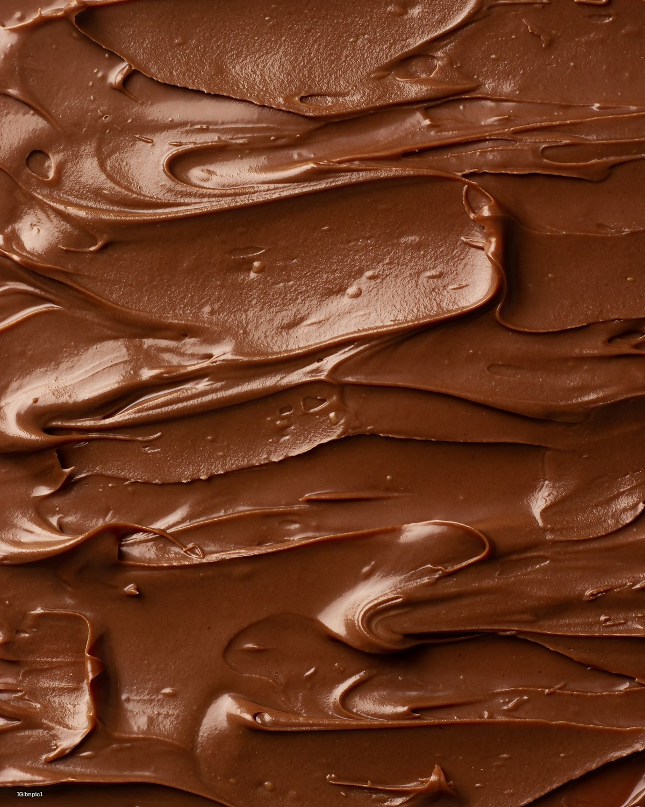
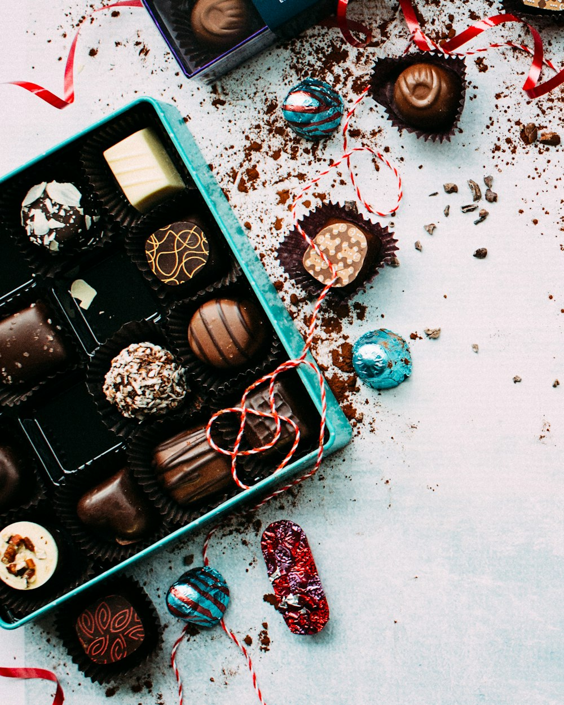
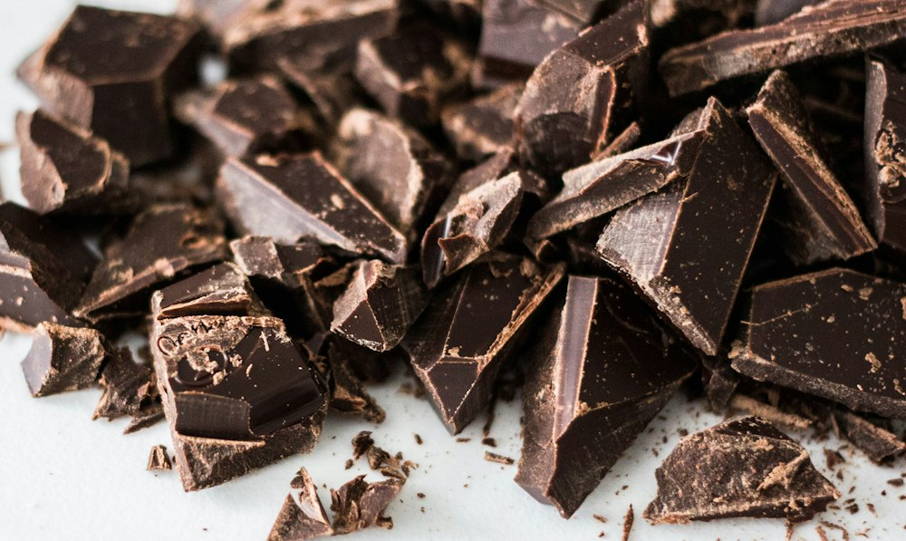
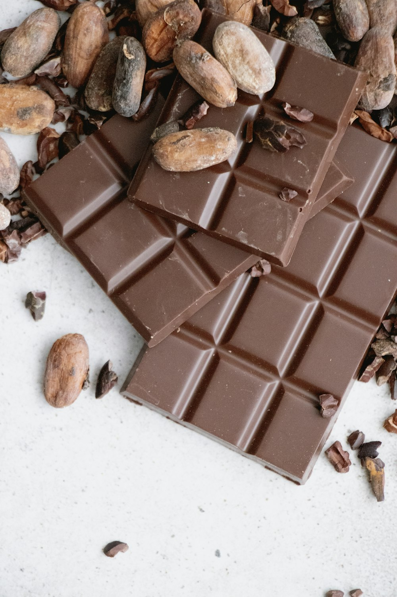

An idea in a paper bag
A home kitchen, a borrowed tempering spatula, and a batch of chocolate that disappears before it can be photographed.
Seismic Chocolates is a small-batch chocolate house with a slightly romantic view of everyday life. We believe a square of good chocolate can change the temperature of a room — and that the best things are still made slowly, by hand, with someone else in mind.
Some places get under your skin. Kathmandu gets into your senses.
The smell of rain on old brick. Marigolds in a morning market. The clatter of a pressure cooker, a bicycle bell, a temple bell answering somewhere above the rooftops. Kathmandu is a city that asks you to pay attention — and, if you are lucky, it teaches you to slow down.
Seismic began with that same idea, applied to chocolate. We wanted to make something that felt like the city at its warmest: generous, a little imperfect, full of layers. Not a luxury to be saved for a special occasion, but a small, beautifully made pause in an ordinary day.
So we imagined a kitchen with wide windows, a marble slab that never quite stays cool, and trays of chocolate waiting for the exact moment they are ready. We imagined wrapping each bar by hand. We imagined a name that captured the feeling of a first bite — a small, delicious tremor.
In our invented origin story, a young cook named Maya returns to Kathmandu after years away with a paper bag of cocoa beans and a stubborn idea: the city deserved chocolate made right here, with its own sense of ceremony.
She starts in a rented kitchen in Patan, testing batches late into the evening. The first bars are too bitter. The next are too sweet. Then one night, with the windows open and the city settling into its evening rhythm, a batch comes out just right — glossy, tender, alive with fruit and smoke.
There is no grand launch. Just a friend, then another, then a neighbour who insists on buying six. The kitchen grows, slowly, on purpose.
The rest is (fictional) history.
“Chocolate should feel like a pause — a few seconds where the rest of the city can wait.”Seismic Chocolates · fictional brand story

We are more interested in the details you can taste than the ones you can advertise. The way a bar snaps. The temperature of the room. The difference between roasted and over-roasted. The minute a caramel goes from golden to burnt.
Small enough that we can smell, taste and adjust every batch before it is wrapped.
We take our time bringing the chocolate to temperature for a clean snap and a mirror shine.
Every bar, praline and box is checked and wrapped by a person, not a production line.
A fictional timeline for a fictional chocolate house — the dates are part of the storytelling, not the record books.
A home kitchen, a borrowed tempering spatula, and a batch of chocolate that disappears before it can be photographed.
A small studio in Patan, wide windows, and a growing list of neighbours who know exactly when the chocolate is ready.
Six chocolates, one ribbon, and a handwritten note. It becomes the beginning of every celebration we are invited into.
Same quiet kitchen energy, more trays of chocolate, and a firm commitment to never getting too big to fuss over a batch.
To make chocolate that turns an ordinary moment into a memory — and to prove that a small pleasure can be made with extraordinary care.
To craft beautiful chocolate in Kathmandu, using thoughtfully chosen cocoa and ingredients, while keeping our kitchen open, honest and human.
Kathmandu shapes the way we think about flavour. Cardamom from the market. A cup of chiya that turns into an afternoon. The way food is offered first to a guest, then to the family, then finally to yourself.
We like to imagine our chocolate carrying a little of that generosity out into the world: a box passed across a table, a bar divided into uneven squares, a note tucked under the ribbon.
Whether it is a festival, a farewell, a birthday or a Tuesday that needed rescuing, the best chocolate is the chocolate that is shared.
Explore the collection


There is only one way to know if a story is any good: taste it. Browse our small-batch collection, or write to us about a gift, a celebration or a very good Tuesday.